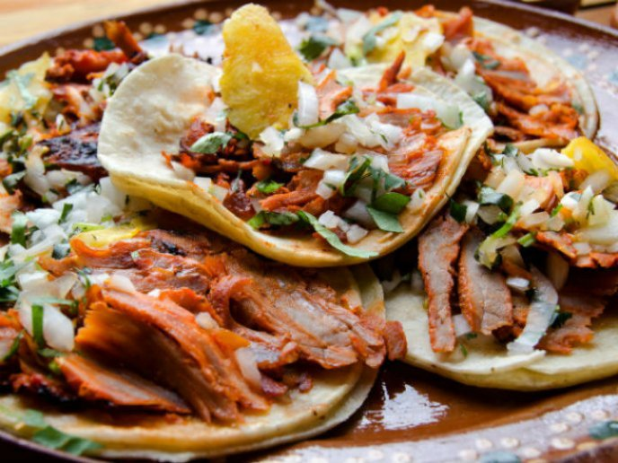
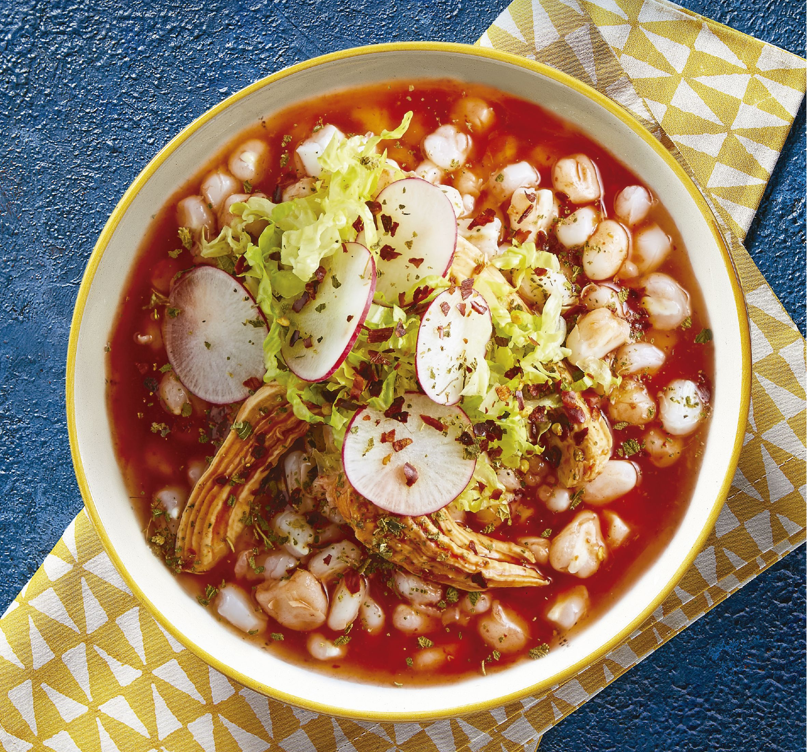
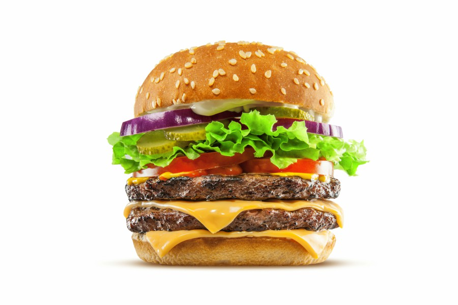
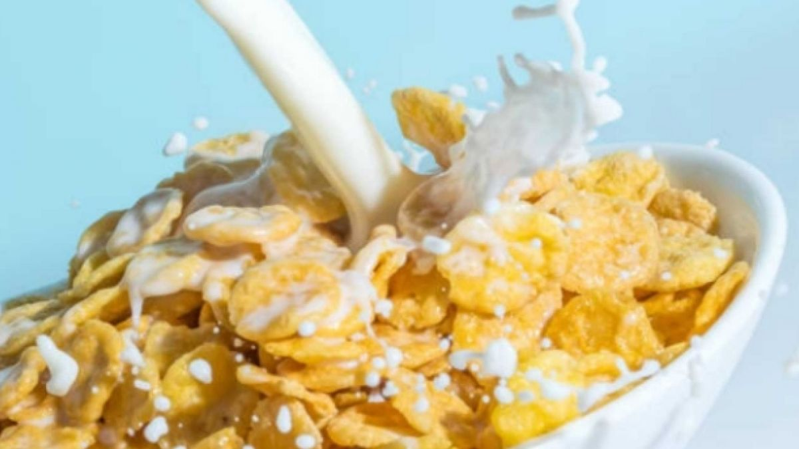
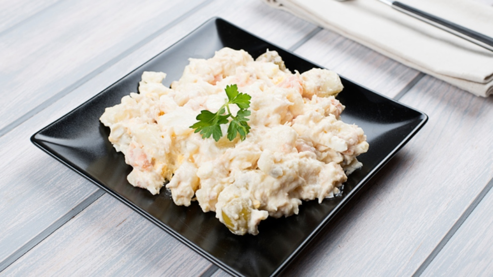
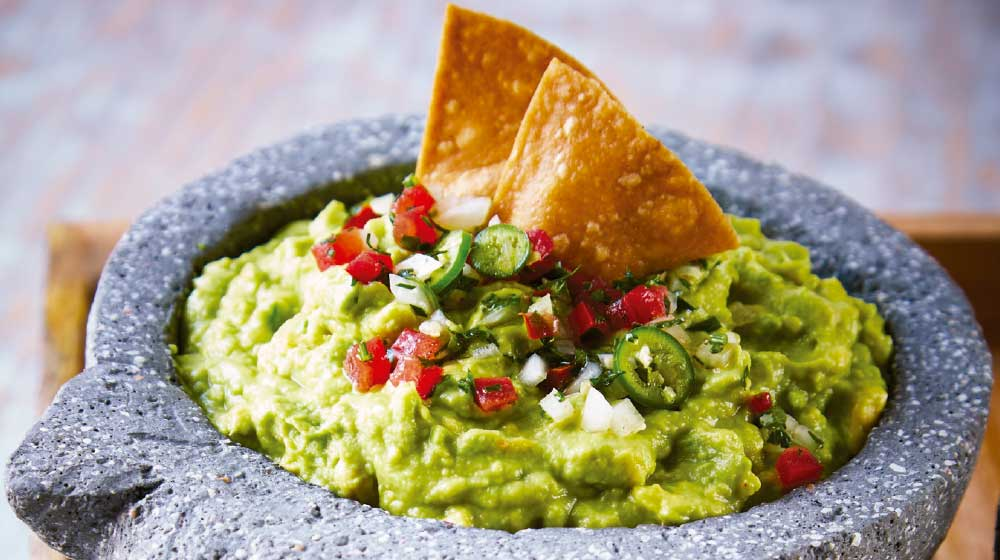

Tacos al pastor
Platillo tipico de México, se trata de carne al pastor en una totilla pequeña.

Pozole
Un caldo hecho a base de granos de maíz de un tipo conocido comúnmente como cacahuazintle, se le agrega pollo o/y carne.

Hamburguesa
Es un tipo de sándwich hecho a base de carne molida aglutinada en forma de filete cocinado a la parrilla o a la plancha.

Cereal
Un platillo clasico de foraneo, es cereal (el que guste) con leche.

Atun con mayonsea
Otro platillo clasico de foraneo, atun mezclado con mayonesa, un súper clásico.

Totopos con guacamole
Platillo de foraneo fresa, totopos con una deliciosa salsa hecha con aguacate, chile y pico de gallo.
